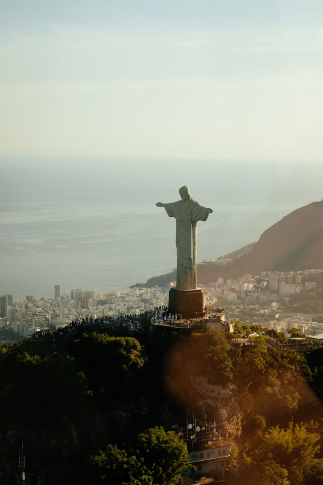
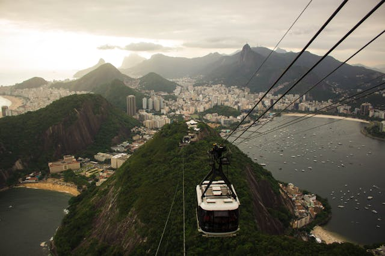
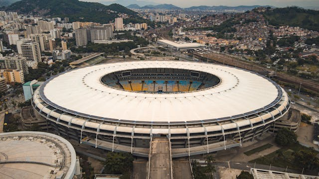
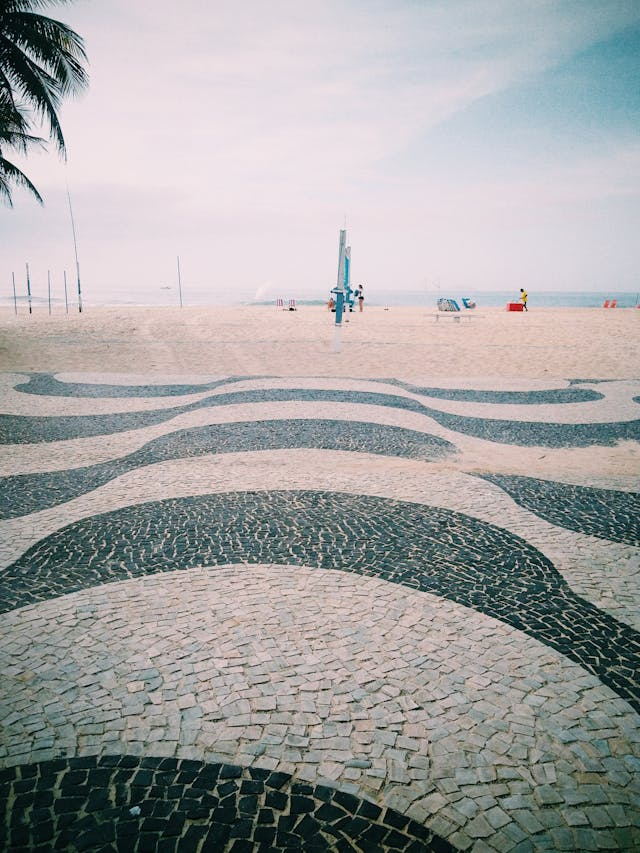

Header Logo
header link one
header link two
header link three
This website is awesome
This website has some subtext that goes here under the main title. It's a smaller font and the color is lower contrast
Sign up
Some random information.

Perched on Corcovado Mountain, Christ the Redeemer symbolizes peace and offers breathtaking views of Rio de Janeiro.

Sugarloaf Mountain rises from Guanabara Bay, offering stunning panoramic views and iconic cable car rides.

Maracanã Stadium is a legendary monument, embodying the passion and cultural significance of sports in Brazil.

The iconic wave-patterned Copacabana sidewalk is a symbol of Rio’s vibrant culture, inviting scenic strolls along the famous beach.
“Rio de Janeiro is a city that enchants you, seduces you, and never lets you go.”
-Rubem Braga, Brazilian Writer
Call to action! It's time!
Sign up for our product by clicking that button right over there!
Sign up
Copyright © The Odin Project 2024